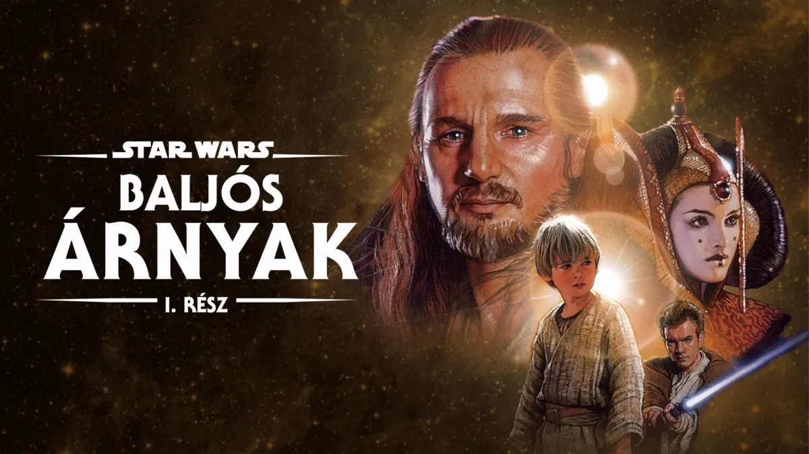

 |
A Star Wars I. rész Baljós árnyak 1999-ben bemutatott amerikai film,
amely George Lucas űroperájának,
a Csillagok háborúja című mozifilm-sorozatnak negyedikként megjelent epizódja,
a cselekmény alapján az első.
A főbb szerepekben Jake Lloyd, Liam Neeson,
Ewan McGregor, Natalie Portman, Frank Oz, Samuel L.
Megjelenés dátuma: 1999. május 19.
Rendező: George Lucas
|
|
| Ez a rész legfontosabb szereplője Qui-Gon Jinn | A film sorozat legfontosabb szereplője Anakin Skywalker |
A Kereskedelmi Szövetség, egy kapzsi nagyvállalat a Naboo bolygó megszállására készül.
A Galaktikus Szenátus vezetője két jedit küld ki, hogy közvetítsenek, azonban sikertelenül járnak,
és menekülniük kell Amidala királynővel, a Naboo uralkodójával együtt. Útközben,
hogy sérült űrhajójukat megjavítsák, leszállnak a félreeső Tatuin bolygón,
ahol megismerkednek Anakin Skywalkerrel, az ifjú rabszolgafiúval, akiben szokatlanul nagy a jedi Erő.
a Galaktikus Köztársaság idején játszódik, amikor a Kereskedelmi Szövetség blokád alá veszi a békés Naboo bolygót.
A Köztársaság két Jedit Qui-Gon Jinnt és Obi-Wan Kenobit küldi a konfliktus békés megoldására,
de a tárgyalások kudarcba fulladnak. A Jeditámadás után menekülniük kell, és találkoznak Jar Jar Binks-szel,
aki elvezeti őket a Gunganek víz alatti városába.
Ezt követően sikerül megmenteniük Naboo királynőjét, Padmé Amidalát, és elmenekülnek a bolygóról.
Kényszerleszállást hajtanak végre a sivatagos Tatooine-on,
ahol találkoznak egy különleges képességekkel rendelkező fiúval, Anakin Skywalkerrel. Qui-Gon úgy véli,
hogy a fiú a próféciákban megjövendölt kiválasztott, aki egyensúlyt hoz az Erő
Anakin a segítségükkel elnyeri a szabadságát, és velük tart Coruscantra, ahol a Jedi Tanács elé kerül.
A történet végén Naboo felszabadítására indulnak, és egy látványos csatában szembeszállnak a Sithek egyik tagjával,
Darth Maullal. A film lezárása előrevetíti a későbbi galaktikus háborúkat és Anakin sorsát.
Az előzmények később jöttek ki, mint a többi rész, ez a rész megmutatta hogy találták meg Anakint, és ki volt Obi Wan mestere.
Vissza a főoldalra